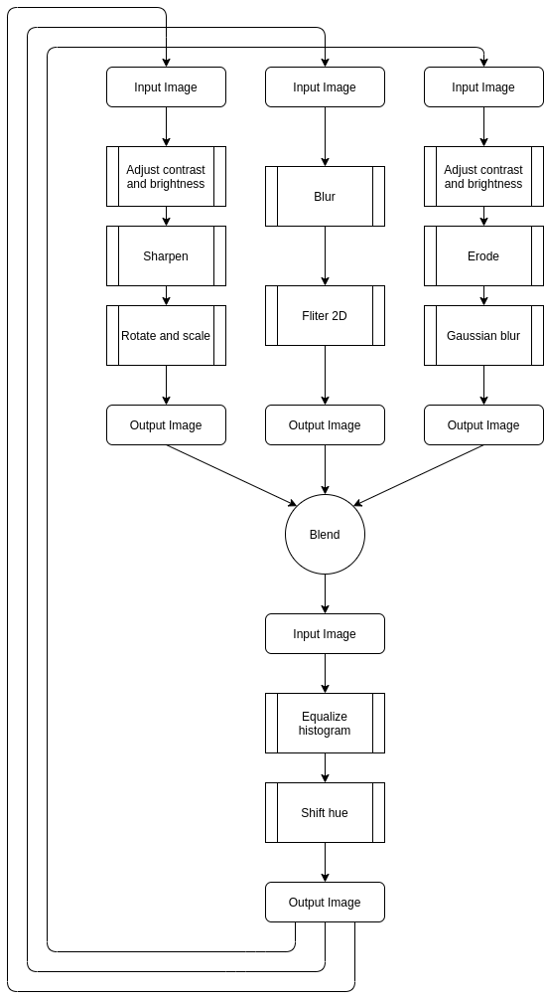

You can read an expanded exploration of this project at this Wolfram community forum page. If you're interested in interacting directly with my code, that's the place. ;) If not, feel free to keep reading on! :)

In this blog post, I'm going to write about this implementation and the cool things it does. I'll explore the code, providing explanations and code output as examples. Note: In this project, I wrote my code above all to be readable. It is quite slow, and I may rewrite it some day to be much faster. There are many obvious ways it could be improved, but I am satisfied now with how easy it is to parse when reading.
Video feedback is a unique visual phenomenon that occurs when a video camera is pointed at a monitor displaying the camera's own output. This creates a feedback loop, resulting in a pattern of video distortion and abstraction. By following José's diagram, we will be able to create a Mathematica function that can simulate this phenomenon and produce really cool video feedback patterns. Let's begin.
José's diagram allows us to break the feedback synthesis into discrete steps for each recursion. These are:
1. Preprocessing the input image by equalizing its histogram and optionally shifting the image hue.
2. Make three copies of the preprocessed input, and process them according to three different processes. The first process applies contrast, brightness, sharpening, rotating, and resizing adjustments to the copy. The second applies two blurring adjustments to the copy. Lastly, the third applies contrast, brightness, erosion, and blur to the copy.
3. Blend the processed copies
Let's see what this looks like in practice! First, let's define an input image:
Let's preprocess the image:

Now, let's take the prepared image, and apply the processes described in the previous section to three separate copies:
The first process:

The second process:

The third process:

Finally, we blend the resulting images together:

Here is a visualisation of the steps of the process:

All that's left to do is tie these steps together in a function:

Let's visualise the first few iterations of feedback from a starting image at some arbitrary settings:


Then let's visualise the result after many iterations starting from the same input.


Here are some examples of output I got from playing around with the settings for a bit:

You get these interesting stripy shapes for even very simple inputs, for instance:


I hope this exploration was fun! I'll end this post with a gallery of curated outputs from playing around with different inputs and settings:


{kind=link}
{kind=link}
{kind=link}
{kind=link}